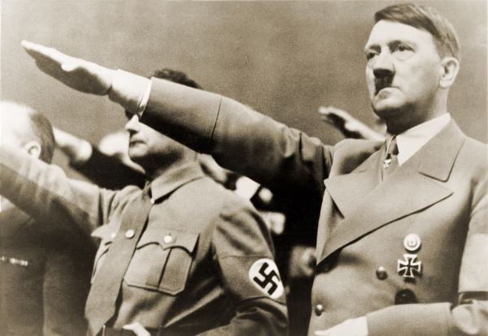

Ideologia Nazista
A ideologia nazista é bastante complexa e ampla, abordando diferentes questões. Os grandes conceitos da ideologia nazista são:
Antissemitismo
Antibolchevismo
Racismo
Ação da guerra
Eugenia (ideal de purificação da raça)
Nacionalismo extremo
Desejo de expansão territorial
Desprezo pelas artes modernas, etc

Holocausto
A perseguição aos judeus e a outras minorias promovida pelo nazismo ficou conhecida como Holocausto. Atualmente, sabe-se que 6 milhões de judeus foram mortos em consequência disso. Esse total correspondia a 2/3 dos judeus da Europa, pois, antes da guerra, a população judia no continente europeu era de 9 milhões de pessoas.